ICPC2013 World Final
1日目
出発前
- 渋谷で攻殻機動隊ARISE観る。
- 大学に行ってつんくんの勇姿を見に行く。
- W8に入ってチームメンバーと合流。
- 四川でとこはるさんに春巻きをおごってもらう。
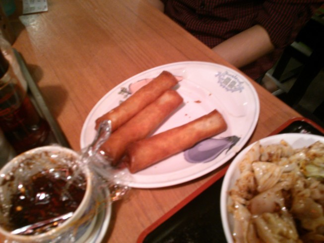
出発後
- 飛行機の中で夜食が出るっぽかったが、25:30出発でさすがに眠いのでスルーして寝る。
2日目
ドバイ行き飛行機内
- 気流が悪いのかときどき大きく揺れて眠りづらい。
- 朝になったので朝食が出る。
- JapaneseとWesternどっちがいいかと聞かれて、Westernと答えたのに数が足りなくなったのか、強制的にJapaneseになる。
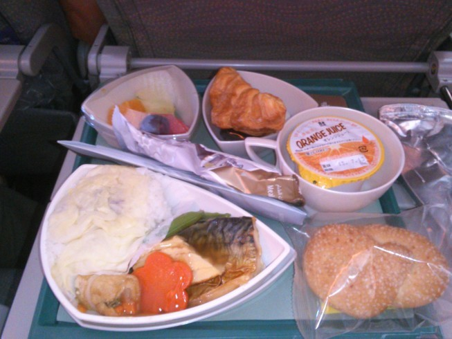
- 朝食のあとも寝る。結局機内ではほとんど寝てた。
ドバイ着
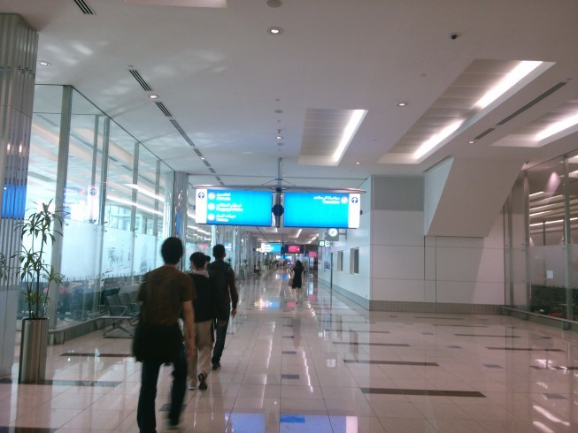
- 広い。
- 空港のフリーWifiに接続し、Twitterで時間をつぶす。
サンクトペテルブルクへ
- 本を読んだり、nouserさんのPCでゲームをしたりする。
- 機内食のメニューに書いてあるアラビア語を、英語と対比しながら解読する遊びをする。
- 今度は機内食の注文がちゃんと通った。
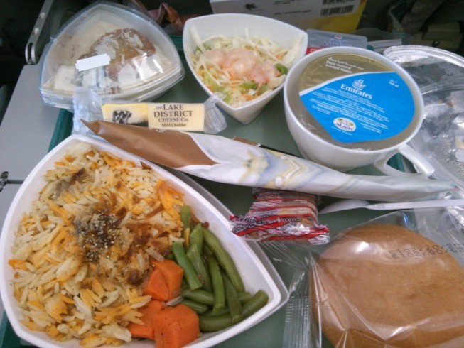
- 機内食おいしい。
- 細い米はパサパサしてて、おいしいけどあまり食べた気がしない。
サンクトペテルブルク着
- Mobile wifi受け取る。
- ICPCのバスが満員になってしまい、1時間待つことになる。
- 待ってたら雨が降り始めた……
- 道はとにかくまっすぐで路面電車が走っている。
ホテル着
- ホテルでチェックイン、チーム登録をする。
- チームシャツはピンク。忘れてたけど、そういえばそんな指定をした気がする。
- スタッフに「I love your t-shirts!」とか言われる。
- 食事うまい。
- 20時を回っているのに外が明るい。
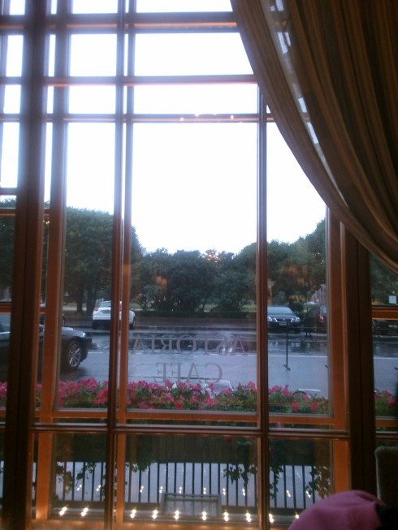
3日目
- 雨やばい
IBM TechTrek
- Stroustrup先生の話
- 世界最小の映画の話
- ビッグデータの話
昼食
- バイキングの列に並んでたら、日本チームじゃない人に日本語で話しかけられて驚く
- Minesota大学の中国人で、日本語を勉強しているらしい。
Opening Ceremony
- 高級そうなホール。
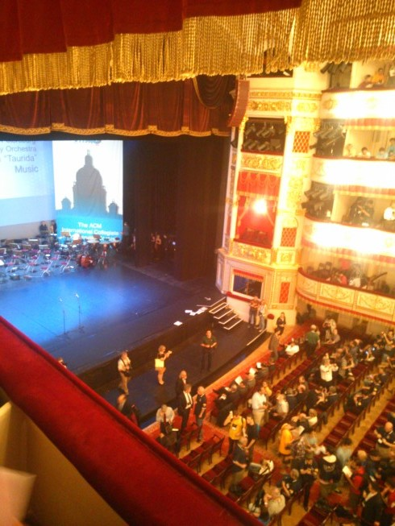
- 久しぶりにプロの生オーケストラ聞いた。
- オーケストラがマリオメドレー演奏してた。
- Opening Ceremonyは基本的に偉い人を次々と紹介していきつつ、合間合間に出し物が入る構成。
- Bourneシェルの開発者がICPCの中の人だということを知る。
夕食
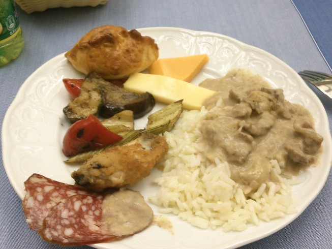
- ビーフストロガノフおいしい
- Texas大学の人？に、日本のチームはいくつ来てるの？とか日本の代表選出はどういう方法なの？とか聞かれる。
美術館
- エクスカーションでエルミタージュ美術館へ。
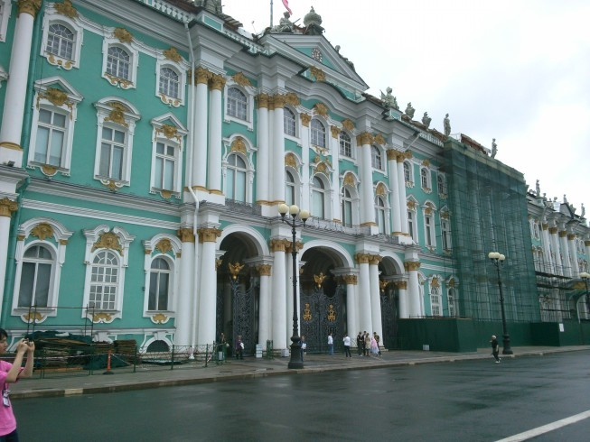
- 猫がいたけど正面向きの写真を撮れなかった。
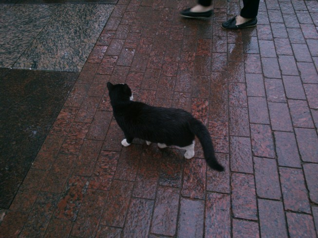
- よくわからんアート。
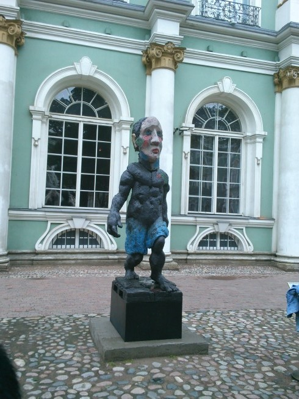
- 中は写真撮影してもいいっぽかったけど撮ってない。
帰り
- 雨が止んでいたので歩いて帰る。
-
- Chill Zone(交流会)でちょっと遊んだ。
-
- でかいチェスとチェッカーがあった。
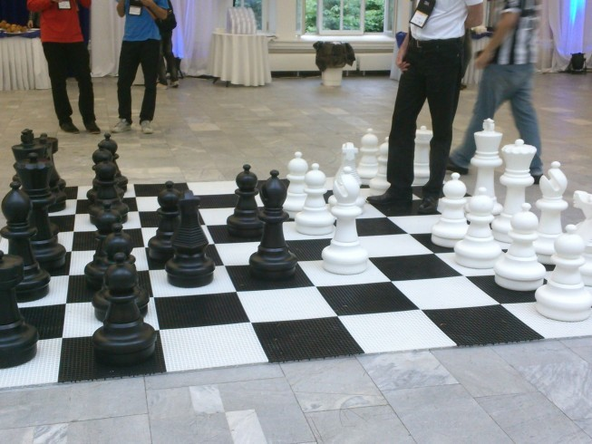
- 歯ブラシとビールを買いに行く。
- 言葉が通じないけどがんばる。
-
ホテルに戻ってきたら、鍵（カードキー）がなくなってた。どっかに落としたらしい。
- ビール。特にまずくもなく、特別おいしいわけでもない、普通の味。
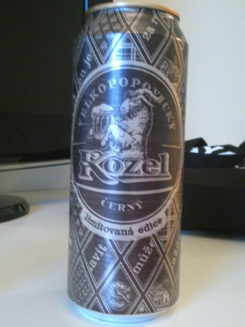
4日目
- 快晴
Practice Session
- 11問くらいある。
- でも2,3問を除いて簡単。
昼食
- 会場にくっついてるホールでバイキング。
- 人多い。
- 長い列に並んだら実はデザートの列で、20分くらいかけてお菓子を取るだけになってしまった。
- とりあえずブルーチーズとか食べる。
- ごはん再チャレンジ。
- 謎のチャーハンっぽい物体とかゲット。
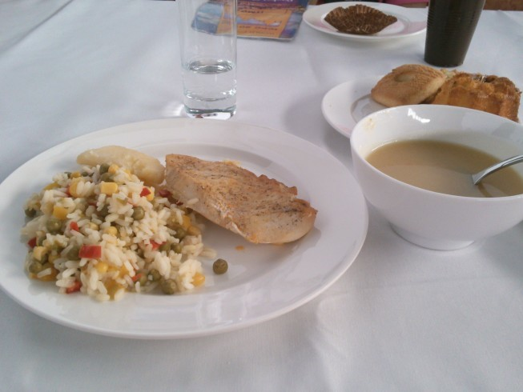
## エクスカーション - Practice Sesionの続きみたいなことをしてからエクスカーション。 - ペテロパブロフスク要塞へ。
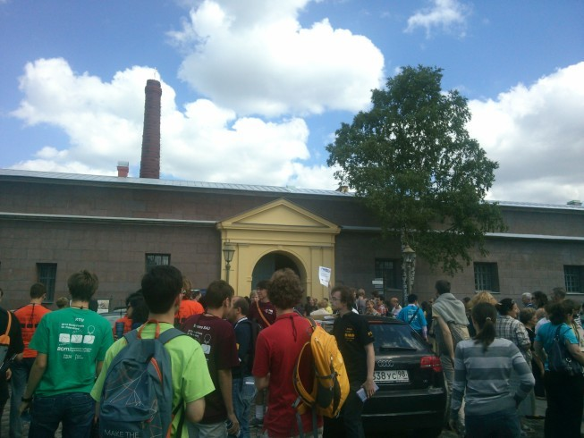
- ガイド付きがいいか適当に歩くかと聞かれて、適当に歩くのを選ぶ。
- 入り口から適当に歩いてくと、拷問博物館があったので入る。
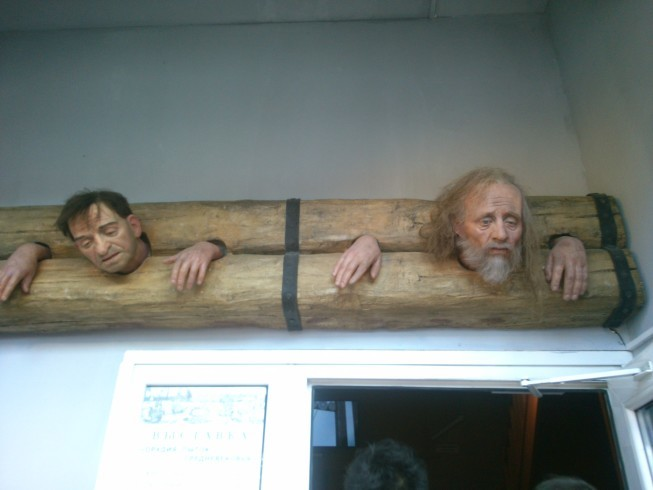
- 拷問器具が説明とともに展示されてた。
- 拷問やばい。
- そのあとは城壁の上にある遊歩道を歩く。
- 景色きれい。
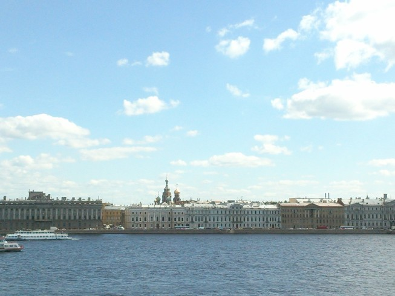
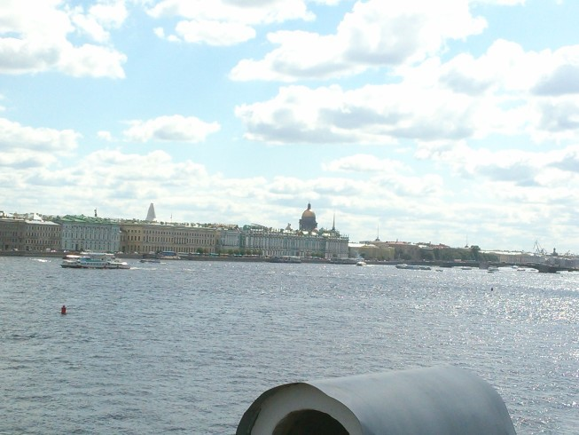
- 川の中のモニュメントにコインを当てられると運がよくなるらしい。
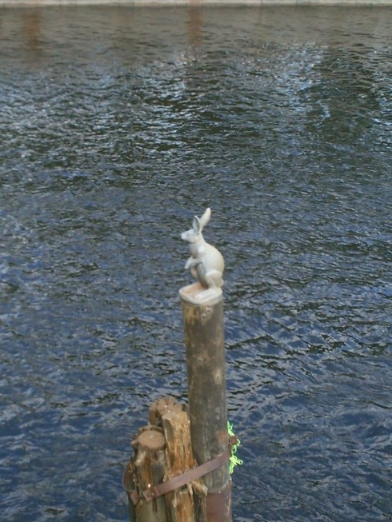
- 外れる。
- 道端の移動式売店でアイスを買って食べて帰る。
- 相変わらずロシア語は分からないので身振り手振りでがんばる。
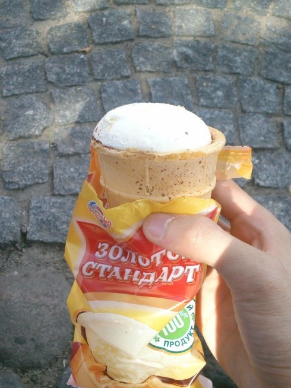
夕食
- ラザニアうまい
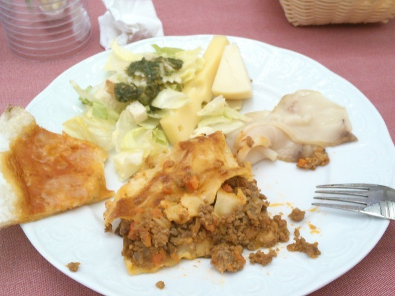
- そういえば今日は1回もビーフストロガノフを食べていない。
- 夕食後、ホテルでカードキーを再発行してもらう。
- 英語が通じるのすばらしい。
- 部屋で適当にチームメンバーと話して寝る。
5日目
入場
- 入場前の待ち時間で、Bill Poucherがロシア語会話練習会を繰り広げる
- 前のステージに立って、スパシーバ！とか連呼していた。
本番
- とりあえず環境設定してCとFを読む。
- Cは最大流っぽいけどよくわからない
- Fは数字大きいし、読み終えた時点でACしてるチームがいくつかいたので簡単そう
- しかし解法わからない
- @eagletmtがEを書き始める。
- 裏でFとDを考える。
- Eが書けたらしく投げるがWA。
- 問題を誤読していて、違う問題を解いていたっぽい。
- FはSegmentTreeで解けるのでは？と@draftcodeが言い出したので書いてみる。
- いくつかテストケースを考えて、正しそうなことを確認する。けどWA。
- @eagletmtがHを書き始める。
- 裏でA、D、Fのどれか解けないか考える。
- Fは二分探索+貪欲でいけるのでは？
- 書いてみる。WA。
- <デバッグしつつ@eagletmtがHを進める>。
- H書けたが、O(N\^4)から計算量が落ちない。
- 結局0完……
Closing Ceremony
- チアガールのダンス披露
- かわいい
- First Solved Awardの発表
- ランキングの前に、Bill Poucherが歴代の優勝大学を読み上げ始める。
- 途中で止めるのかと思いきや、全部読み上げるっぽい……
- Freezeされてた提出をOpenすると、リアルタイムに順位が上下するスコアボードが楽しい。
- 0完チームはさすがに少ない。つらい。
- Twitter見たら色々な人に煽られている。
- 東大3位。さすがである……。
- ITMOが11問中10問解いてぶっちぎりの1位。やばすぎる。
サーカス
- バスで移動してサーカスを見に行く。
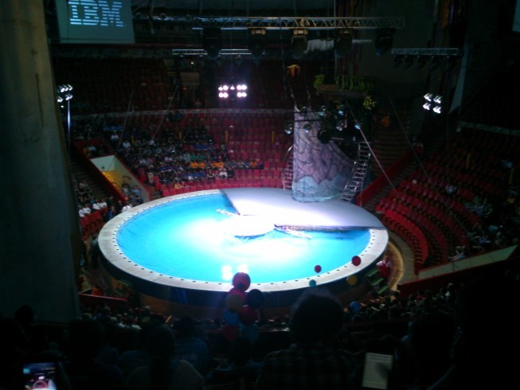
- 水中ダンス、綱渡り、手品、コントなどが入れ替わり立ち代わり。
- 演技のとき、メインの出し物の周りでだいたいダンサーが踊っているのだが、そっちもちょっと気になって集中できない気がした。
夕食
- バイキング形式で夕食。
- スペアリブの食べ方がよくわからない。
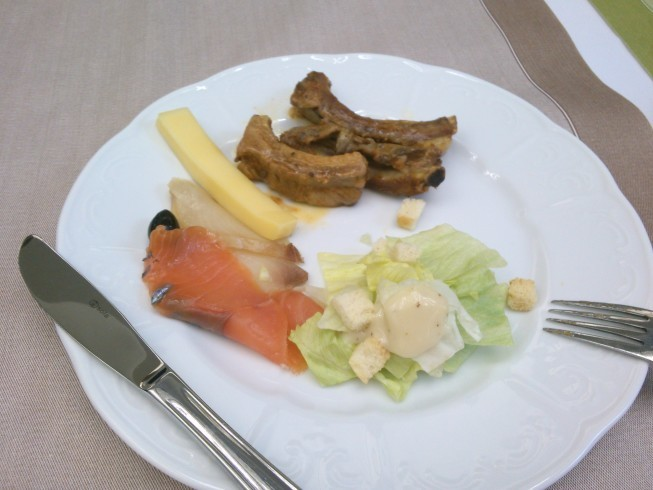
- ハンバーガーを作ってもらって食べた。ブルーチーズ入り。
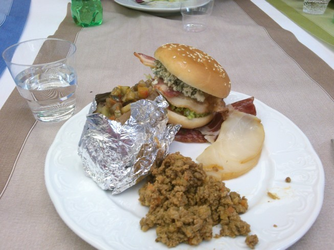
- Chill Zoneでチェス観戦していたら、例のMinesota大学の人と会う。
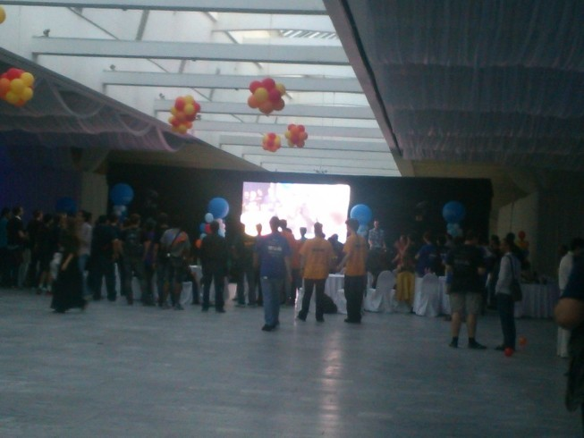
- アニメのこととか話す。
- DJプレイがうるさくて話しづらい。
6日目
St. Issac Cathedral
- 飛行場行きのバスは15:30出発なので、ちょっと観光する。
- ホテルの目の前にあるSt. Issac Cathedralに入ってみる。
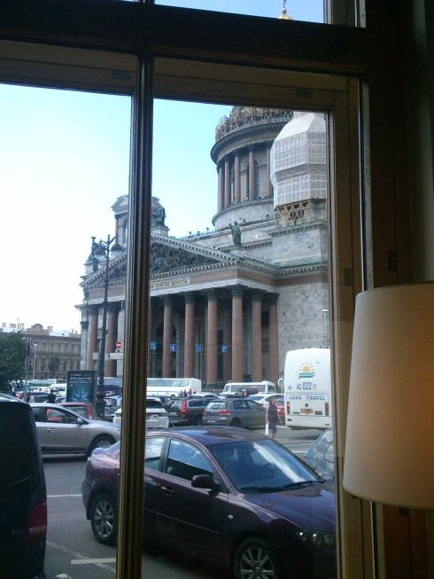
- 広い。
- モザイク画がかなり丁寧にできていて、ぱっと見ではモザイクだと分からない。
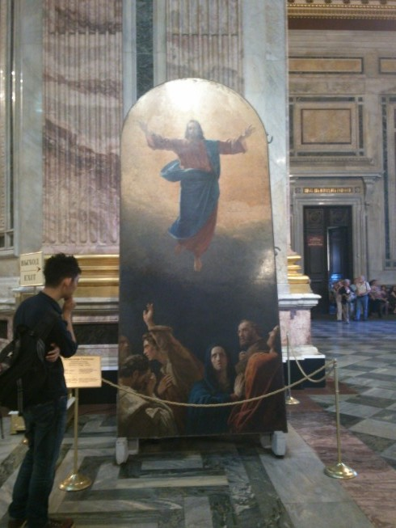
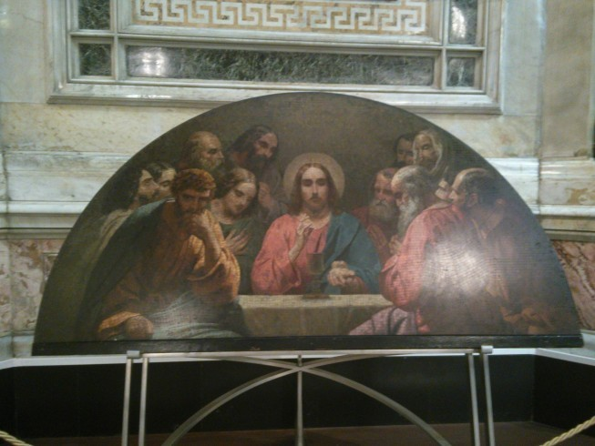
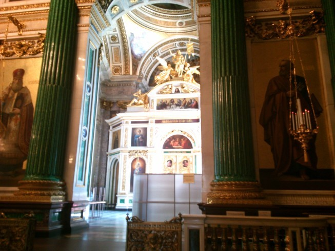
土産
- ネフスキー大通りを歩いて土産屋を探す。
- 本屋を見つけたので入ってみる。
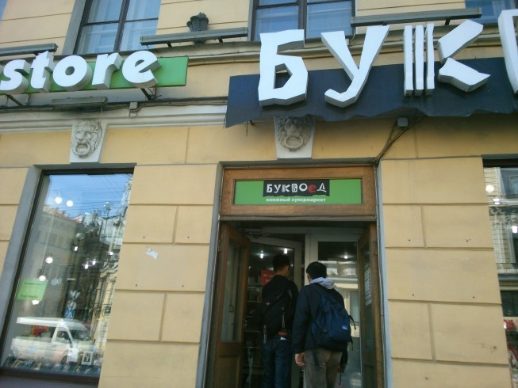
- 道端の看板にICPCの宣伝が出てた。
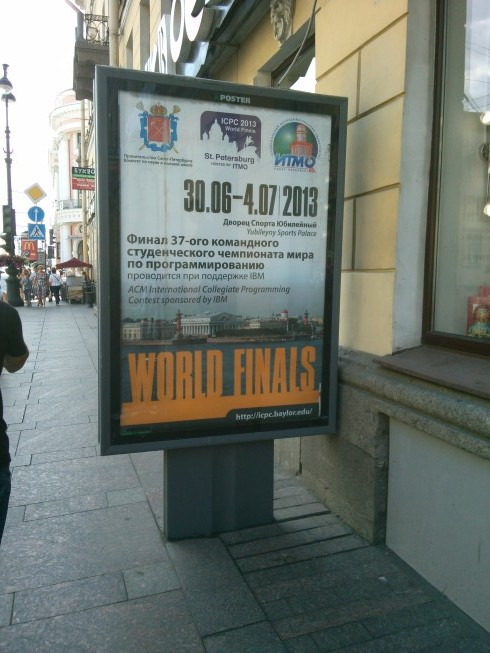
- どこかの聖堂の前で、Souveniersと書いた露店エリアを発見したので見てみる。
- マトリョーシカが大量に並んでいる。
- Angry Birdsとかプーさん、ドラえもんっぽいマトリョーシカなどもあったが、どう見ても正規品ではない。
- 結局ここでは買わず、適当な店に入ってマトリョーシカを買う。
- ICPCのバッジを付けていたら、店員に「そのバッジ見たのは初めてじゃないよ」と言われる。
- コンビニっぽいところでお菓子を買う。
- こっちは英語が通じないっぽい。
- なんか言われて2本指立てられたが、よくわからない……
- ビニール袋を使うかと聞かれたのかもしれない。
- Killfish Burgerというバーガーショップで昼飯を買う。
- こっちも英語は通じないっぽいが、相手が若い人だったせいか、少し英語を交えつつ身振り手振りで説明すると理解してくれた。
- 言葉を発音だけでもできると、メニューを見て注文とかできるのでよい。
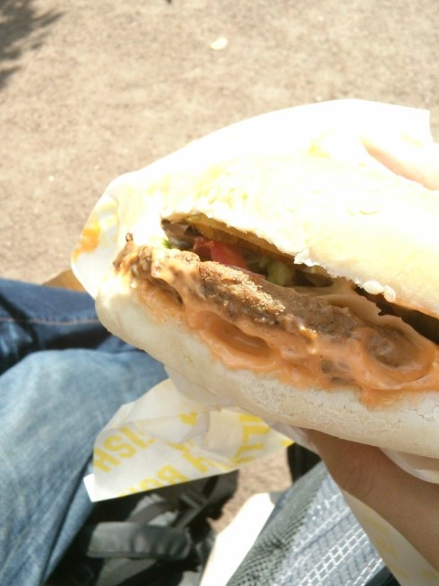
- 飛行機で帰る。
- 機内でワインを飲んだ。
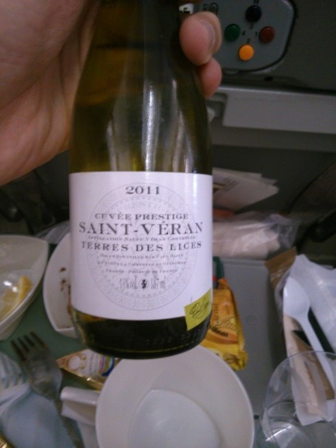
- 香りはいいけど、変な後味が残っていまいち……。
ここにはかつてコメントが表示されていました